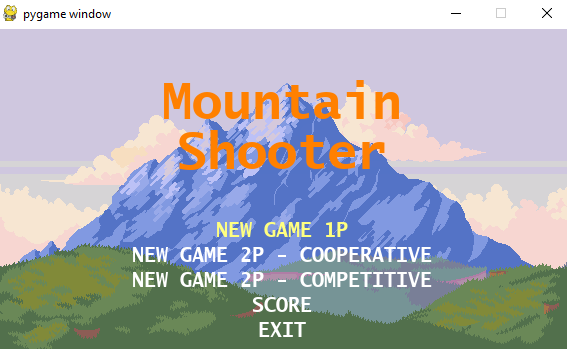

SOBRE MIM
FORMAÇÃO
PORTFÓLIO
CONTATO
Projetos Pessoais
Alguns projetos desenvolvidos
Cardapio Python (UNINTER)
Mountain Shooter (UNINTER)

Rankeador de Partidas (DIO)
Classificador de Heroi (DIO)
Pesquisa e Desenvolvimento
Projeto Vacina Conecta (PROJETO UNINTER)
Mais imagens do site (PROJETO UNINTER)